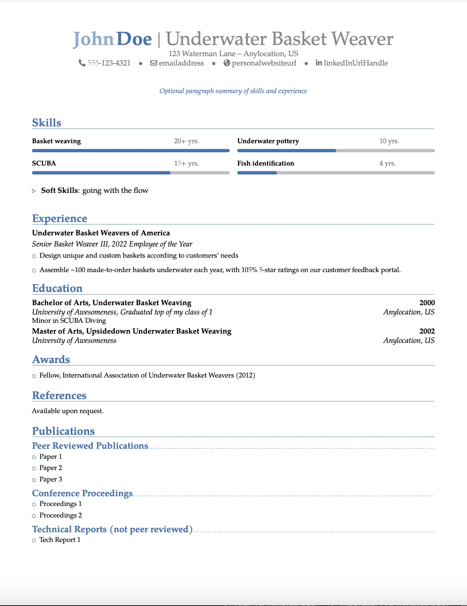
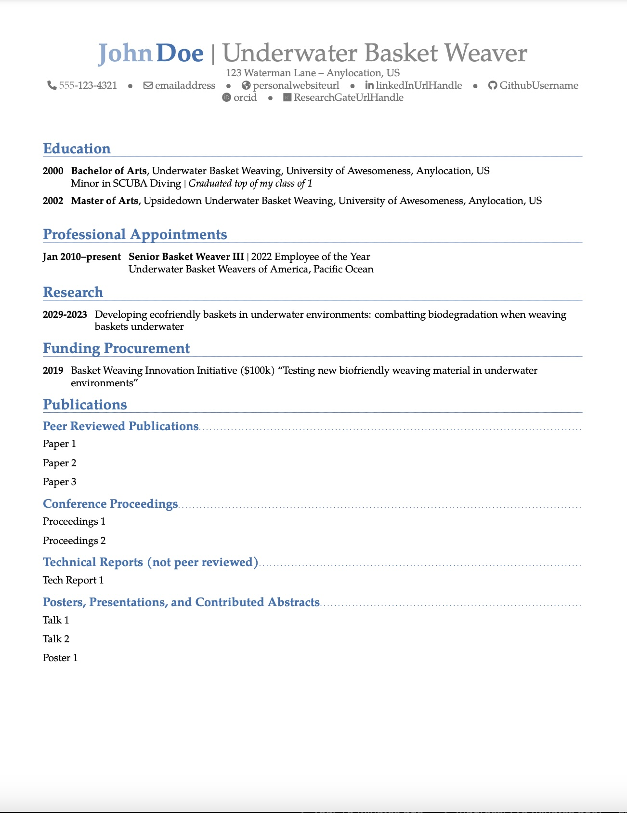
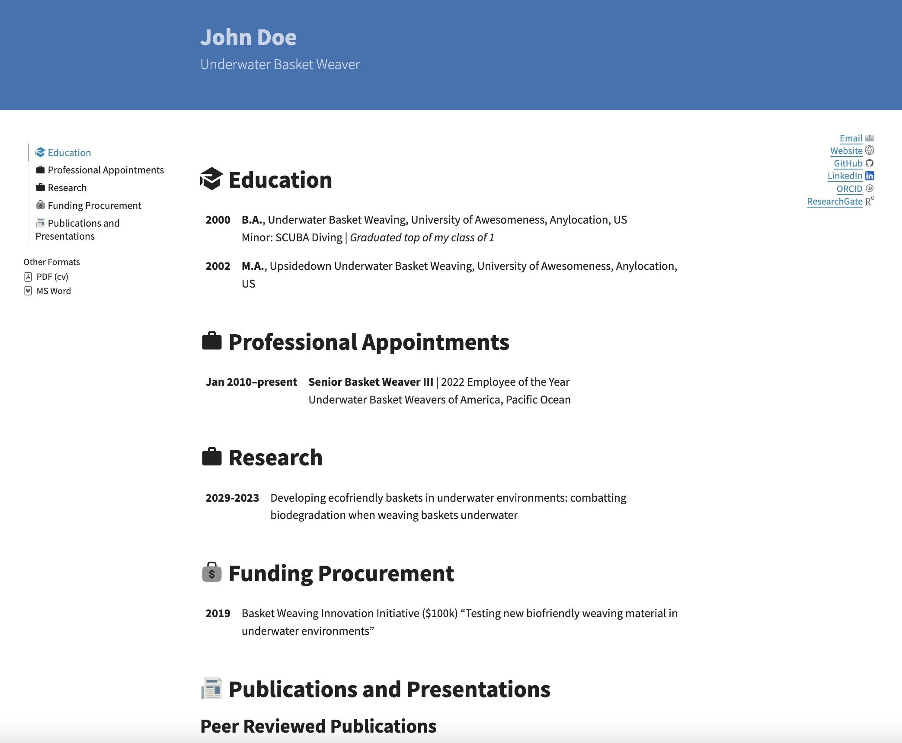

resume-quarto-moderncv
Professional rèsumè and academic curriculum vitæ easily generated in pdf, html, and docx formats
Overview
This template can be used to easily create a professional private sector rèsumè and/or an academic curriculum vitæ (CV) in pdf, html, and docx formats using Quarto and Python:
The pdf version is a custom and limited Quarto implementation of the LaTeX moderncv template. The implementation is inspired by and derived from the modern2-cv Quarto template by schochastics.
The html rendering supports integration with a portfolio website. It is based upon this quarto-resume by busemorose, but uses Python instead of R to format the content, mostly due to seemingly endless challenges installing R’s flextable package.
Credit and kudos to both authors, as well as all upstream template authors, none of whom I know personally. Thank you for your contributions to open science. This template serves to pay it forward.
The docx version is intended to provide a quick and easy way to populate a Microsoft Word document with the same content for occasions when this file format is needed. While the pdf and html versions are properly and similarly formatted, the docx version requires considerable manual intervention after the file is created.
Rèsumè and CV content are entered in _contents.yml. Layout and formatting customizations can be made in resume.qmd and cv.qmd. Instructions are provided below.
Previews
| Rèsumè | CV | |
|---|---|---|
|  |  | |
| HTML |  |
 |
Creating a Rèsumè and CV
Rèsumè and CV content are provided in YAML format in _content.yml. Most of the variables are used in both the rèsumè and CV, streamlining the process of making two separate but related documents. However, some entries are unique to one or the other document. All are described below. All entries are strings unless otherwise noted.
Header Information
Header information appears in the banner at the top of the html rendering. These include the standard Quarto title and subtitle top-level YAML arguments:
| Keyword | Description |
|---|---|
title |
Your full name for website header |
subtitle |
Occupation or job title |
For example:
_contents.yml
---
title: "John Doe"
subtitle: "Underwater Basket Weaver"
---The name displayed at the top of the pdf and docx files are passed to author via second-level firstname and lastname arguments:
| Keyword | Description |
|---|---|
firstname |
Your first name for pdf and docx files |
lastname |
Your last name for pdf and docx files |
For example:
author:
firstname: "John"
lastname: "Doe"Note that your name needs to be provided twice in _contents.yml: to title and to author, in order for all documents to display properly.
Contact Information
Contact information for the top of the rèsumè and CV are passed to the top level content key, as in author above:
| Keyword | Description |
|---|---|
phone |
Phone number |
email |
Email address. Will generate a “mailto” call if formatted properly as an email address (with an “@” symbol) |
website |
URL to personal or professional website |
github |
Your GitHub username only. Will generate the custom web URL directing to this user’s dashboard. |
linkedin |
Your LinkedIn handle only. Will generate the custom web URL directing to this user’s public page. |
orcid |
Your ORCID number only. Will generate the custom web URL directing to this user’s public page. |
researchgate |
Your ResearchGate handle only. Will generate the custom web URL directing to this user’s public page. |
extrainfo |
Any other information to include at the top of the rèsumè and CV? |
A physical or mailing address can also be passed to the contact key. It is separated into line1 and line2 keys:
contact:
address:
line1: "123 Waterman Lane"
line2: "Anylocation, US"Putting it all together so far:
---
title: "John Doe"
subtitle: "Underwater Basket Weaver"
author:
firstname: "John"
lastname: "Doe"
contact:
address:
line1: "123 Waterman Lane"
line2: "Anylocation, US"
phone: "555-123-4321"
email: "emailaddress"
website: "personalwebsiteurl"
github: "GithubUsername"
linkedin: "linkedInUrlHandle"
orcid: "orcid"
researchgate: "ResearchGateUrlHandle"
extrainfo: "Anything else to highlight up front?"
---Summary
An optional professional summary for the rèsumè can be passed to the top level summary key, if desired. This is usually a paragraph-like executive summary of the rèsumè itself or used to highlight or emphasize key knowledge, skills, and abilities. Omit if not desired.
The summary does not appear in the CV.
Education
Education (i.e., degrees earned) is provided as a list of items with the following elements:
| Keyword | Description |
|---|---|
degree |
Type of degree (e.g., B.S., Master’s of Science, etc.) |
major |
Primary field or area of study of the degree |
institution |
Name of the degree-granting institution |
location |
Location of the institution |
date |
Date of degree conferral |
minor |
Minor or secondary area(s) of study (optional) |
extra |
Any additional information (e.g., awards) (optional) |
For example:
education:
items:
- degree: "Bachelor of Arts"
major: "Underwater Basket Weaving"
institution: "University of Awesomeness"
location: "Anylocation, US"
date: "2000"
minor: "SCUBA Diving"
extra: "Graduated top of my class of 1"
- degree: "Master of Arts"
major: "Upsidedown Underwater Basket Weaving"
institution: "University of Awesomeness"
location: "Anylocation, US"
date: "2002"Skills
Technical skills are included in rèsumès only. They are displayed as a simple bulleted list for html and docx and as a table with status bar-like visualizations of overall competence in pdf rendering. They are provided as a list of items, as in education above, with the following entries:
| Keyword | Description |
|---|---|
skill |
Name of the skill |
years |
Number of years of experience |
scale |
Float, value between 0 and 1 quantifying the amount of experience or level of expertise. Should be relative to years. For example, the skill with the maximum number of years of experience should have scale = 1. |
The skills section also takes two additional arguments:
| Keyword | Description |
|---|---|
ncol |
Integer specifying the number of columns for the skills list |
softskills |
Additional soft (i.e., non-technical) skills passed as a stingle string of comma-separated skills (optional) |
Experience
Professional experience is passed as a list of items, as in education above, with the following entries:
| Keyword | Description |
|---|---|
role |
Job or position title |
employer |
Name of employer |
location |
Location of employer |
date |
Date(s) of employment |
details |
Description of job duties or accomplishments. This must be a single string, but asterisks (*) will be treated as bullets and will create a list when rendered. See example below. |
extra |
Any additional information to include (optional) |
For example:
experience:
items:
- role: "Senior Basket Weaver III"
employer: "Underwater Basket Weavers of America"
location: "Pacific Ocean"
extra: "2022 Employee of the Year"
date: "Jan 2010--present"
details: |
* Design unique and custom baskets according to customers' needs
* Assemble ~100 made-to-order baskets underwater each year, with 105% 5-star ratings on our customer feedback portal.Research
The optional research category is only used in CVs. Research activities are passed as a list of items, as in education above, with the following keywords:
| Keyword | Description |
|---|---|
entry |
Description of research activity |
date |
Date(s) of research activity |
For example:
research:
items:
- entry: "Developing ecofriendly baskets in underwater environments: combatting biodegradation when weaving baskets underwater"
date: "2029-2023"Awards
The optional awards category is only used in rèsumès. Provide a list of items with keyword award.
Funding Awards
The optional fundingawarded category is used only in CVs to list grants or other competitive funding. Provide as a list of items with keywords entry and date, as in research above.
Publications
Four categories of publications are supported: peer-reviewed for peer-reviewed publications such as journal articles; proceedings for conference proceedings; tech-reports for non-peer reviewed technical reports; and talks for presentations, posters, or contributed abstracts. All categories are passed as lists of items with keyword paper. For example:
publications:
peer-reviewed:
items:
- paper: "Paper 1"
- paper: "Paper 2"
- paper: "Paper 3"Miscellaneous
The rèsumè and CV file names are passed to resumefilename and cvfilename, respectively (do not include a file extension.) These are used to create hyperlinks to the pdf and docx files:
resumefilename: "my-resume"
cvfilename: "my-cv"Customization
Rendering html and docx
Rèsumè and CV renderings can be customized in resume.qmd and cv.qmd Quarto markdown files, respectively. The most important elements to modify are the output-file arguments in the front matter under resume-pdf and docx in resume.qmd to specify the name of the rèsumè file produced, and under cv-pdf and docx in cv.qmd to specify the name of the CV file to be produced.
The body of these markdown files controls the html and docx renderings. One may wish to add, remove, or rearrange sections in either document, or change header names. In addition, any social or web media omitted from the contact section in _contents.yml should be removed or commented out in these files to prevent errors during rendering if html and/or docx renderings are desired. The current version of this template does not handle these entries conditionally.
These renderings are constructed using Python functions found in scripts/moderncv.py. All functions process subsets of _contents.yml passed to an items keyword. (Python loads the contents of YAML files as nested dictionaries and lists.) For example, multiple entries under the skills category in _contents.yml would create a list of dictionaries, one dictionary per skill, which would look like this:
Sample Python function
with open("_contents.yml", "r") as f:
contents = yaml.safe_load(f)
print(contents["skills"]["items"])
[{
"skill": "Basket weaving",
"years": "20+ yrs.",
"scale": 1
},
{
"skill": "SCUBA",
"years": "15+ yrs.",
"scale": 0.7
},...]Some functions take additional arguments; these are summarized here but consult the respective docstrings for more information.
| Function | Arguments | Usage |
|---|---|---|
mdlist |
items: as described above bullets: whether or not to include bullets in the list |
Create a simple list of entries. Used for Awards and Publications. |
mdskills |
items: as described above ncols: number of columns for the skills table icons: whether skills should be prefaced by an appropriate icon, if one is available for that skill (displayed in html rendering only) |
Display skills in a rèsumè, either as a table (pdf) or a bulleted list (html and docx) |
mdeducation |
items: as described above abbrev: whether or not to always abbreviate degree type |
Create a formatted list of degrees for a rèsumè |
mdexperience |
items: as described above |
Create a formatted list of professional experiences for a rèsumè |
cventry |
items: as described above |
Create a list of CV entries prefaced by the date. Used for Research and Funding categories. |
cvexperience |
items: as described above |
Create a list of professional experiences prefaced by the date for a CV |
cveducation |
items: as described above |
Create a list of educational degrees prefaced by the date for a CV |
Rendering pdf
Customizing the pdf renderings is somewhat more involved, as it requires knowledge of LaTeX in addition to the Markdown described above. The pdf rèsumè and CV renderings are templated in _extensions/schochastics/resume/resumetemplate.tex and _extensions/schochastics/cv/cvtemplate.tex, respectively. Sections can be added, removed, or rearranged in these files, as well as other more advanced customizations, if one knows what one is doing in LaTeX. The advanced user may also find the LaTeX “moderncv” package documentation helpful.
Advanced
As with all Quarto projects, additional modifications can be made in _quarto.qmd. This is only needed if one does not like the existing layout or functionality. Generally, this file does not need to be modified.
In addition, a _website.yml file is included in case one wishes to convert the html rendering into a stand-alone website. Add this file to the metadata-files list in the front matter of resume.qmd and/or cv.qmd to add navigation bars on the top and left side as well as a footer at the bottom of each page.
Usage
This repository is configured to publish the html renderings to GitHub Pages. This is updated automatically when changes are committed or pushed. The rèsumè and CV can be accessed from the landing page and linked to directly from other sites, if desired. Corresponding pdf and docx files can be downloaded from the html page.